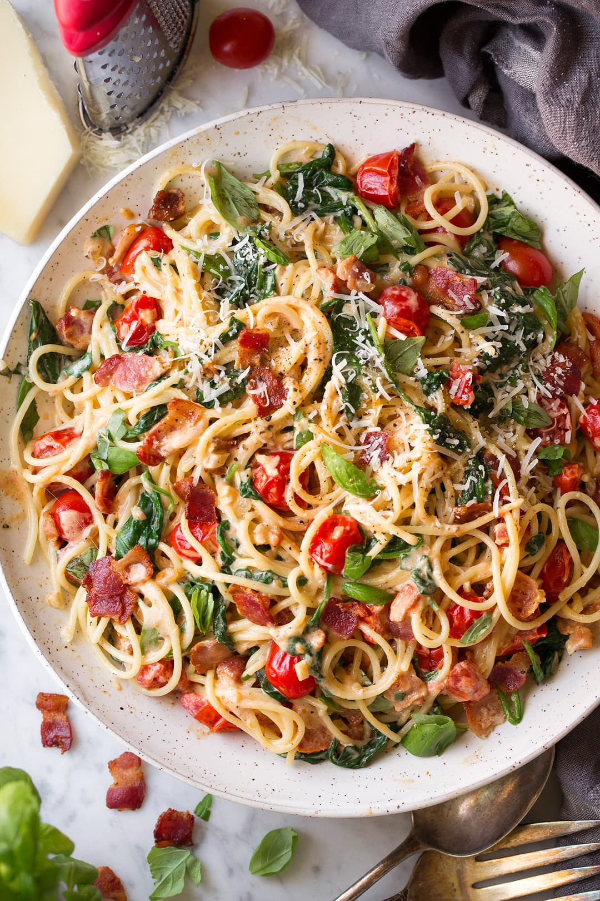

Bacon & Roasted Tomato Linguine

A light and refreshing spring pasta
This is an easy pasta dish perfect for sharing
with friends on the patio when the weather breaks!
Ingredients:
- Kosher Salt
- 18 Ounces Fresh Linguine
- 9 Slices of Bacon, Chopped
- 4 1/2 Cups of Cherry Tomatoes
- 2 Shallots, Thinly Sliced
- 2 Eggs
- 2/3 Cup Grated Pecorino Romano Cheese
- 2 tspn Grated Lemon Zest
- Fresh Ground Pepper
- 1 Cup Fresh Basil, Torn
Instructions:
- Bring large pot of salted water to a boil
Add the pasta and cook until el dente. Drain
water and set aside 2 cups pasta water.
- While boiling cook bacon over med-high heat
until crisp. Add tomatoes and shallot. Cook
until tomatoes burst, approx. 5 minutes.
Pour all but 2 tbspn of grease and throw away.
- Whisk eggs, cheese, zest, and pepper into a bowl.
Slowly stir in the pasta water that was set aside.
- Reduce heat to med-low and slowly add the mixture to the
pasta and toss until creamy. Add salt to taste and
stir in the torn basil. Top with cheese, basil, and pepper